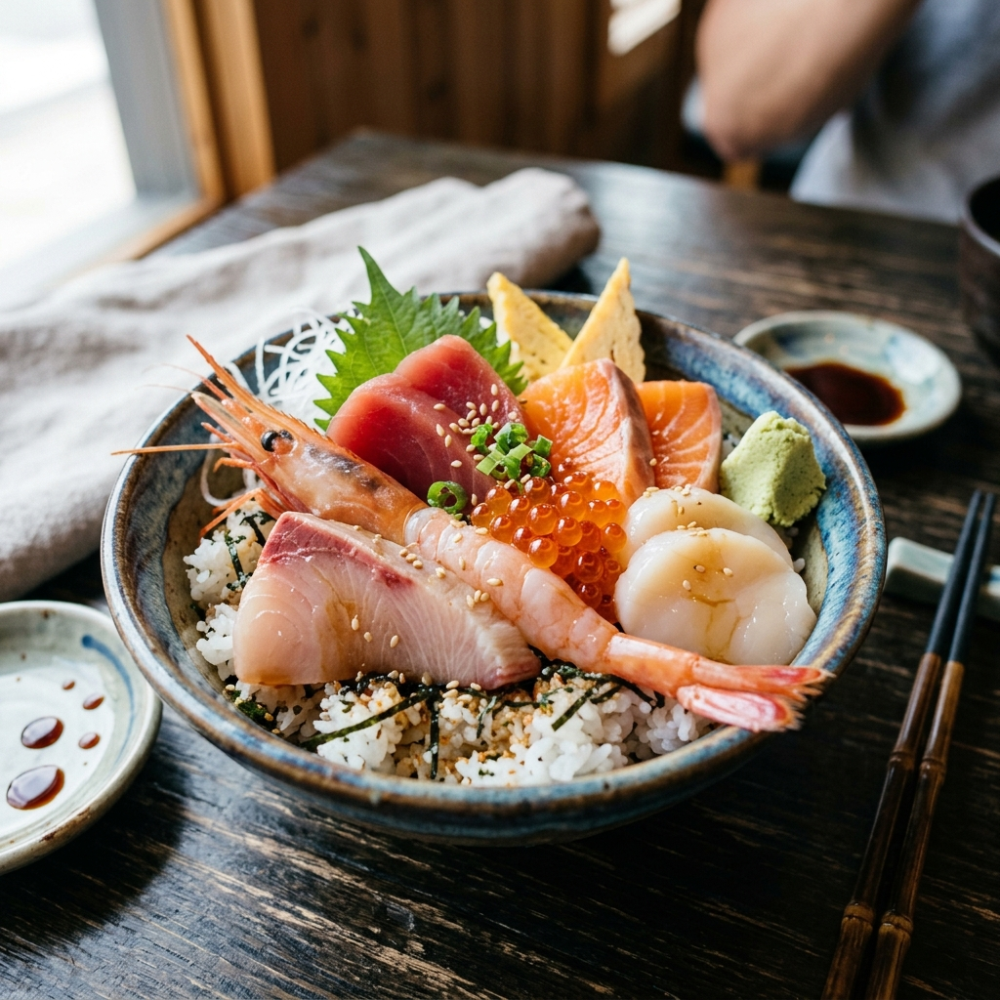
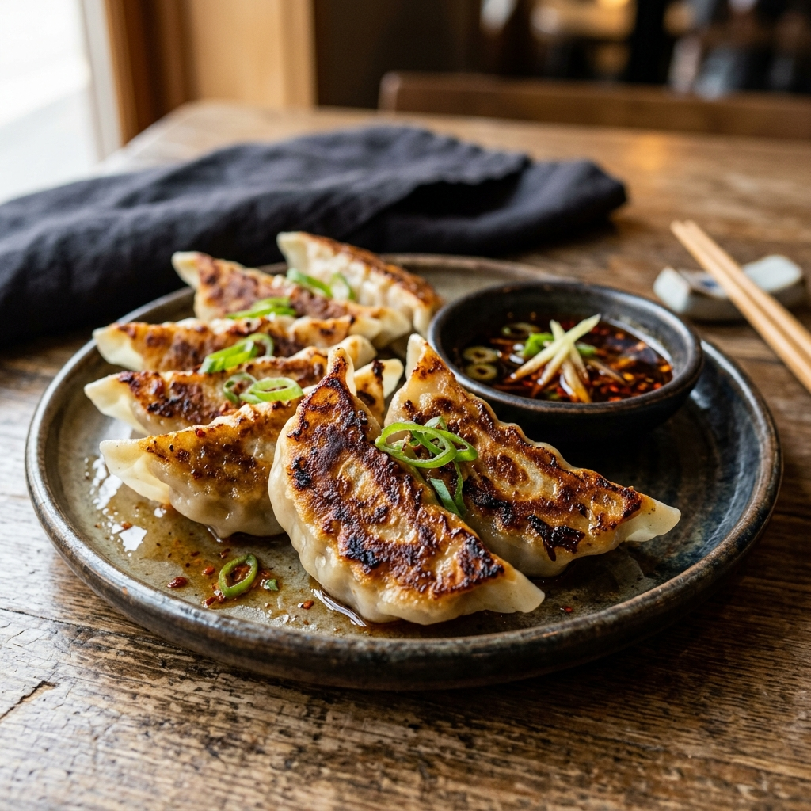
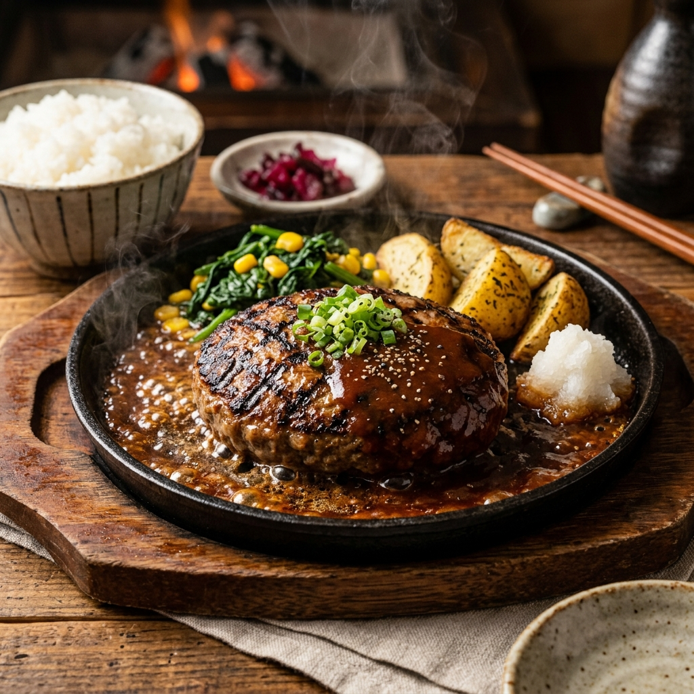
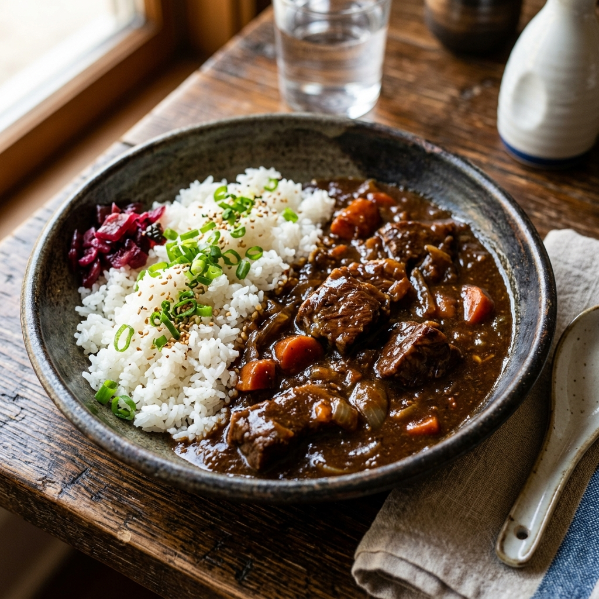
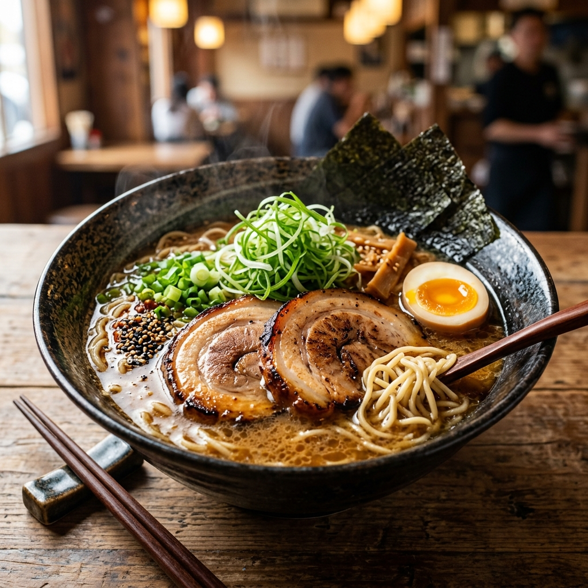

海鮮・居酒屋さかなや うおきく
豊洲市場直送の新鮮な魚介が楽しめる海鮮居酒屋。特に土日限定のランチはボリューム満点の「海鮮丼」が大人気です。
最寄り: 三郷駅 徒歩圏内
おすすめ: 週末限定海鮮丼
地元で愛される名店から話題の新店舗、お買い物のついでに寄れる大型施設まで、三郷市エリアの本当に美味しいグルメ情報をインターネット調査から厳選してまとめました。
ランチタイムに絶対外せない、三郷市の美味しい名店をピックアップしました。

海鮮・居酒屋豊洲市場直送の新鮮な魚介が楽しめる海鮮居酒屋。特に土日限定のランチはボリューム満点の「海鮮丼」が大人気です。

餃子専門店地元で親しまれる餃子専門店。パリッとした焼き目の定番餃子に加え、えび餃子やカレー餃子などバラエティ豊かな味が楽しめます。
元イタリアン出身のオーナーが作るこだわりの定食が人気の居酒屋。月・水・木・金限定のランチはご飯やお味噌汁のおかわり自由！
三郷エリアでうなぎを楽しみたい時におすすめの定番老舗。香ばしく焼き上げられた絶品のうな重が堪能できます。
SNS等でも話題になっている、特徴ある専門店です。

ハンバーグ専門店2025年にオープンした、宮城県産黒毛和牛を使用した炭火焼きハンバーグの専門店です。完全予約制の希少性も魅力。

カレーライス国産黒毛和牛と淡路島産玉ねぎをじっくり煮込んだ「未完成カレー」が看板メニューのカレー専門店。洗練された空間も特徴です。
使い勝手の良い定番のお店と、リクエストいただいたピックアップ店舗です。

ラーメン三郷中央駅近くのラーメン店。担々麺や魚介系スープなど、しっかり系メニューを食べたい日に向いています。
石窯ピザと生パスタ系のイタリアン。家族や複数人での食事にぴったりです。
駅近で使いやすい複合カフェ。軽食・作業・待ち合わせに最適です。